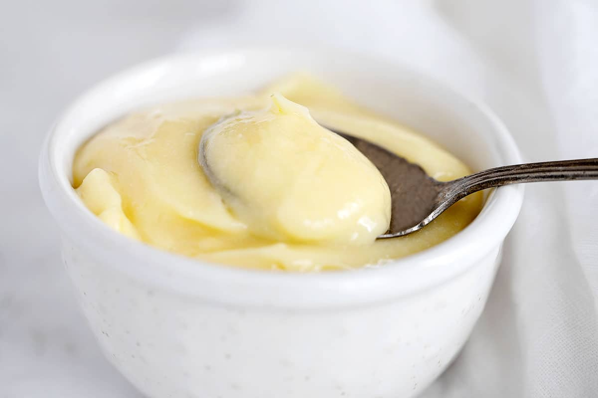

Lemon Curd

Easy Whole Egg Lemon Curd
Wonderfully luscious and creamy lemon curd, using whole eggs.
Great no-waste lemon curd for when you don't have a use for left-over egg whites.
Ingredients
- 3 large eggs, whole
- 1 cup white granulated sugar
- 1/2 cup lemon juice
- 1/4 cup butter
- 1 Tbsp lemon zest
Steps
- Remove the lemon zest from the lemon and measure out. Set aside.
Juice the lemon(s) and strain, then measure out the required amount.
Set aside..
- In a medium, heavy-bottomed saucepan (not aluminum), whisk together the eggs and sugar thoroughly.
(Be sure the eggs and sugar are whisked together well before adding the lemon juice, to avoid curdling the eggs.)
Add the lemon juice and whisk to combine well. Place saucepan over just below medium heat (between medium and medium low).
- Cook the mixture, whisking continuously, until the mixture thickens.
Do not let it boil!! The curd will set at about 170F, which is just below the point at which it would start to simmer.
Once the mixture thickens, immediately remove from the heat and stir in the lemon zest and butter, whisking until the butter is melted and the mixture is smooth.
- Transfer the mixture to a small bowl or jar. Once it stops steaming, cover with plastic wrap or lid and refrigerate up to 3 weeks. Lemon curd can also be frozen up to 6 months.